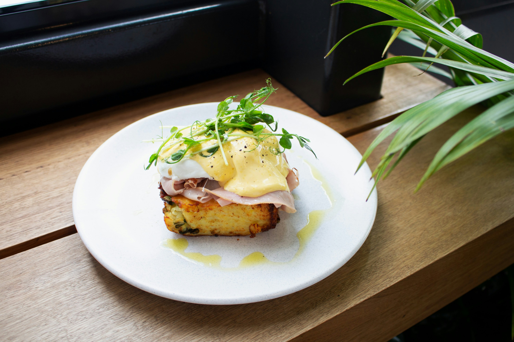
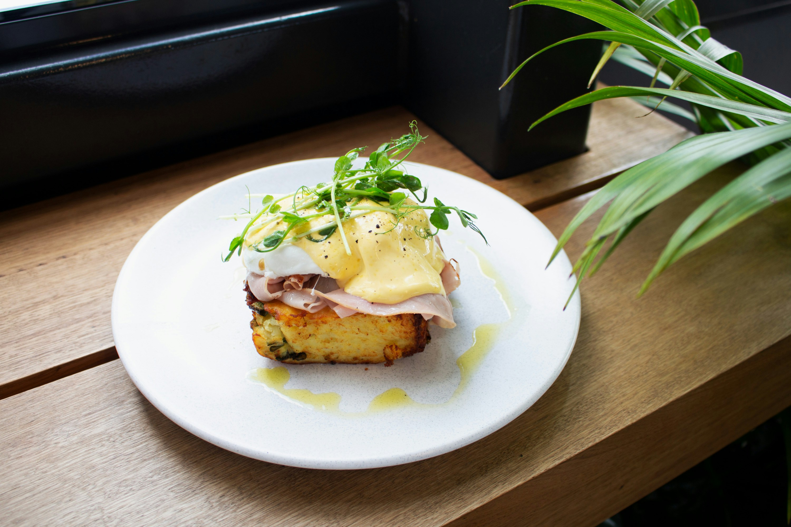

Coffee beans: Coffee beans are the seeds of the coffee plant's fruit, called the coffee cherry.
Coffee types: The two main types of coffee beans are Arabica and Robusta.
Decaf: Decaf coffee has less than 0.3% caffeine.
Coffeehouses: Coffeehouses were important social and information exchange centers in the Middle East and the Ottoman Empire.
Coffee health: Some studies have linked coffee consumption with improved mood, lower risk of depression, and lower risk of stroke.
Coffee preparation: Coffee is made by roasting, grinding, and steeping coffee beans in hot water.
Coffee history: Coffee is thought to have originated in Ethiopia and dates back to around 800 AD.
Coffee Guinness World Record: The largest cup of coffee ever made was over 26,000 liters and was brewed in Mexico in 2022.
Coffee uses: Coffee is commonly consumed as a beverage, but it can also be used in fizzy drinks.
CAFE FULLSTACK FOOD
BEST BREAKFAST AND BRUNCH IN PUNE - EAT FRESH, EAT HEALTHY AND EAT DELICIOUS!
Cafe FullStack is open for all day breakfast, lunch and dinner, every day, all year round. We pride ourselves on being one of the best brunch places in Pune.
We serve fresh and contemporary food from the Mediterranean and Middle Eastern cuisines, along with a great selection of fresh smoothies, salads,
delicious sandwiches, pasta and homemade baked goods.
Our specialties including Hummus, Falafel burger, Shakshuka, Mediterranean sea food & Cocktail delights, will make you come for more!


 
